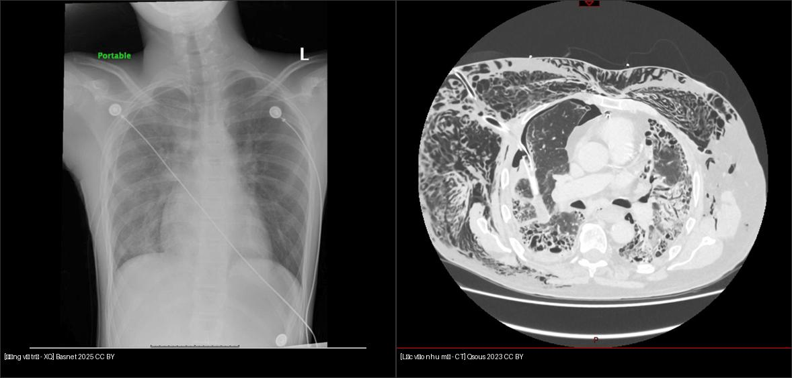
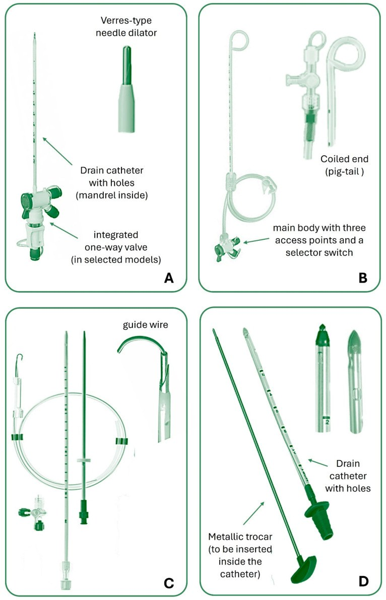
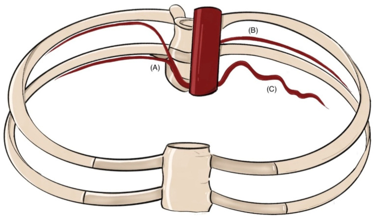
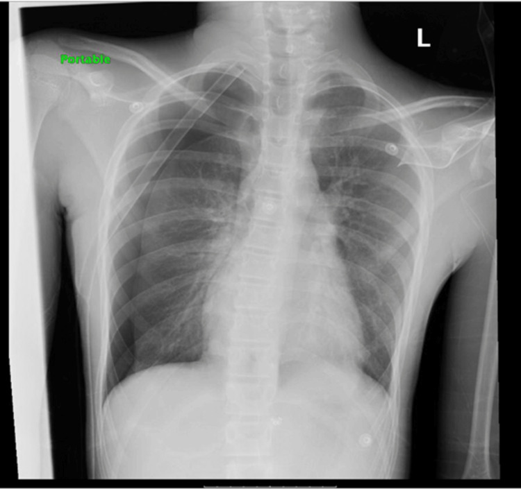
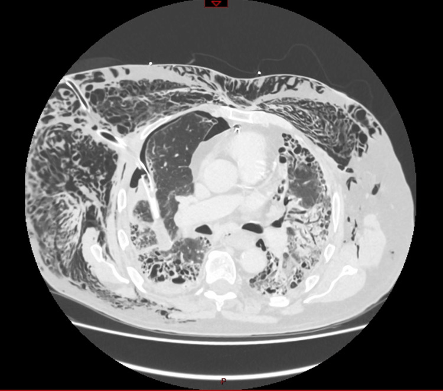
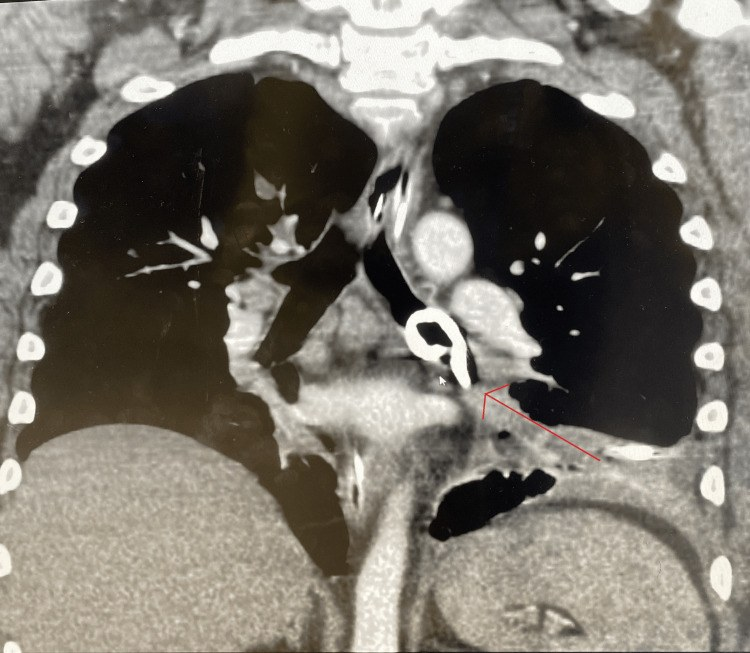
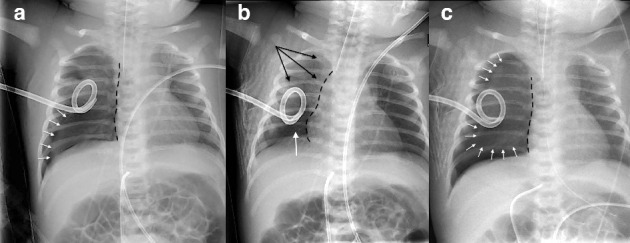
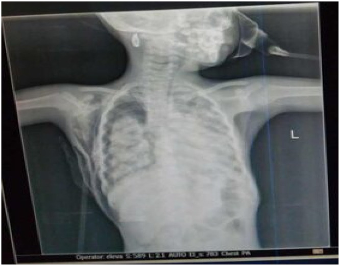
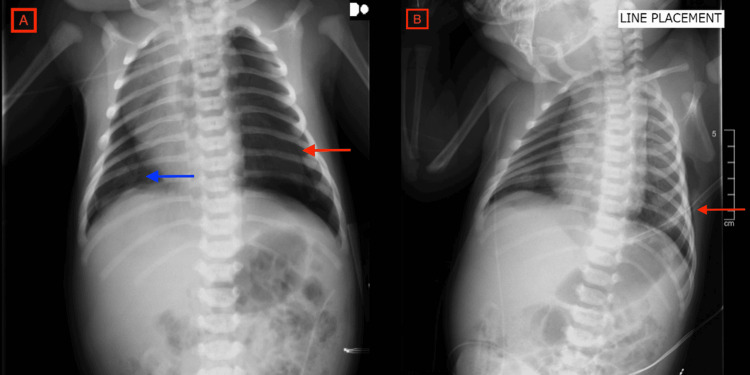
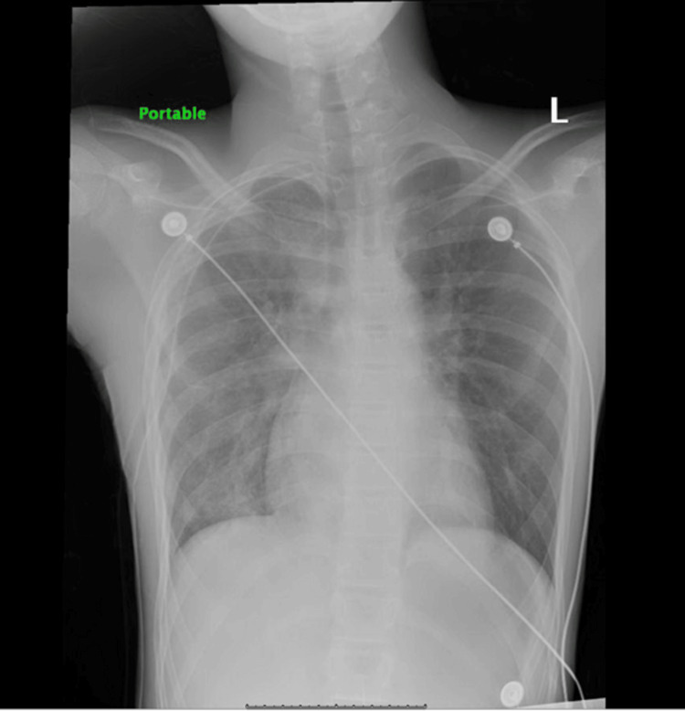

609 — Ống dẫn lưu màng phổi (chest tube) ở trẻ: kỹ thuật – vị trí lý tưởng – biến chứng – thời điểm rút / Chest tube in children: technique, ideal position, complications & timing of removal
Tags: pattern:ong-dan-luu pattern:tran-khi-mang-phoi pattern:ro-khi vung:mang-phoi vung:thanh-nguc protocol:chest-tube protocol:sieu-am-thanh-nguc
Mức chắc chắn (certainty): ca nguyên văn (verbatim case) — neo vào các ca nguyên văn có hình ảnh: (1) chèn ép tim do đặt ống ở trẻ 34 tuần (Grandmougin et al., Front Pediatr 2025, PMC12103966); (2) ống gấp khúc → tái tràn khí ở trẻ 13 tuổi (Basnet et al., Cureus 2025, PMC11926534); (3) ống lạc vào nhu mô phổi (Qsous & Zamvar, Cureus 2023, PMC10745075); (4) ống lạc vào phế quản gốc trái (Sullivan et al., Cureus 2024, PMC11491131); (5) phù phổi tái nở ở trẻ 5 tuổi (Weldetsadik & Demisse, Ethiop J Health Sci 2022, PMC9113034); (6) khí dưới da sau kỹ thuật trocar ở sơ sinh (Jilani et al., Cureus 2024, PMC10849260). Bổ sung tổng hợp y văn mở (kỹ thuật, an toàn mạch liên sườn, thời điểm rút).
1. Tổng quan bệnh học – cơ chế hình ảnh
- Ống dẫn lưu màng phổi (chest tube, intercostal drain) đưa vào khoang màng phổi để (a) hút khí (tràn khí màng phổi, rò khí) hoặc (b) dẫn dịch (tràn dịch/máu/mủ), nhằm phục hồi áp lực âm trong khoang màng phổi để phổi nở lại.
- Vì sao phải "nối kín nước" (underwater seal): khoang màng phổi bình thường có áp lực âm hơn khí trời; nếu hở ra khí trời, khí sẽ trào ngược vào màng phổi. Hệ thống van nước (water-seal) chỉ cho khí/dịch thoát ra mà không cho khí vào lại; buồng điều áp đặt mức hút mong muốn; buồng thu chứa dịch. Đây là lý do ống phải đặt dưới mức ngực và không được gập/kẹp tùy tiện.
- Vì sao đọc được vị trí trên hình: ống dẫn lưu là vật đậm (radiopaque) (PVC/silicone có sọc cản quang), nên đường đi thấy được trên X-quang/CT. Đầu ống đúng vị trí phụ thuộc mục tiêu khí hay dịch:
- Khí nhẹ → dồn phía trước và trên → đầu ống hướng lên trước – đỉnh phổi (ở trẻ lớn: liên sườn 2, trước–giữa đường nách; ở nhũ nhi: liên sườn 4–5, đường trước–giữa nách).
- Dịch nặng → dồn sau và dưới → đầu ống hướng ra sau – xuống đáy.
- Kích thước ống — quy đổi định lượng: hệ French (Fr/Ch) = chu vi ngoài; đường kính (mm) ≈ Fr ÷ 3 (12 Fr ≈ 4 mm). Ống nhỏ (small-bore, 8–14 Fr) dùng phổ biến cho tràn khí/tràn dịch ít; ống lớn (20–28 Fr) cho mủ đặc/máu cục. Bằng chứng: 14 Fr pigtail ≈ 28–32 Fr trong tràn máu màng phổi do chấn thương (ít đau hơn).
- Ngưỡng/TK định lượng nền tảng:
- Đặt ống làm giảm nguy cơ tái phát & phổi nở lại: thành công 80–90%; nhưng tràn khí rò dai dẳng gặp nhiều ở tràn khí thứ phát (SSP).
- Hút liên tục quá sớm/áp lực cao → phù phổi tái nở (re-expansion pulmonary edema, RPE) ở trẻ tràn khí hoàn toàn/lâu ngày; dùng −10 đến −20 cmH₂O, tránh hút ngay sau đặt.
- Khâu cố định ống làm giảm tuột ống: 6,6% so với 14,8% (không khâu).
2. Mẫu hình + chẩn đoán phân biệt theo vị trí (gamut)
- Ống ĐÚNG vị trí và hoạt động: đầu ống trong khoang màng phổi (theo mục tiêu khí/dịch), không nằm trong nhu mô/khe liên thùy/trung thất; hệ thống có dao động cột nước (swinging) khi thở; rò khí giảm dần.
- Ống LẠC (malposition) theo vị trí:
- Trong nhu mô phổi (intraparenchymal): đầu ống chui vào nhu mô → không dẫn được khí/dịch, rò khí dai dẳng; có thể hút khí nhu mô gây tổn thương thêm.
- Trong khe liên thùy (intrafissural): đầu ống kẹt giữa hai lá → kém hiệu quả.
- Trong trung thất / phế quản gốc: đầu ống chui vào phế quản gốc (nhất là bên trái do hướng ống) → đe dọa tắc/thủng đường thở.
- Ngoài lồng ngực / dưới da: ống tuột/lạc ra mô mềm → khí dưới da, không dẫn màng phổi.
- Biến chứng tại chỗ/muộn:
- Gấp khúc (kinking) = nguyên nhân phổ biến nhất của ống không hoạt động → tái tràn khí trong viện; gỡ gấp là xử trí.
- Chèn ép tim (cardiac tamponade) do đầu ống xuyên cơ tim/màng tim — biến chứng hiếm nhưng tử vong, đã ghi nhận ở trẻ non tháng.
- Phù phổi tái nở (RPE): phù phổi không do tim, sau giải phóng khí/dịch nhanh ở phổi xẹp lâu — hiếm, có thể tử vong.
- Tổn thương động mạch liên sườn (intercostal artery) do đâm dưới bờ sườn → tràn máu màng phổi; phòng bằng đâm NGAY TRÊN bờ sườn dưới (trong tam giác an toàn).
- Khí dưới da (subcutaneous emphysema): thường do kỹ thuật trocar/ống lạc; sờ lạo xạo (crepitus).
- Mnemonic sàng lọc: sau đặt ống mà không cải thiện → hỏi theo thứ tự "ống đúng vị trí chưa? ống có bị gấp/tắc không? có biến chứng mới (chèn ép tim/phù phổi) không?" — chụp lại là bắt buộc.
3. Bảng so sánh phân biệt (ma trận đối chiếu)
| Thực thể (entity) | Hình ảnh điển hình | Chốt vào (rule-in) | Chốt loại (rule-out) | Gợi ý xác nhận |
|---|---|---|---|---|
| Ống đúng vị trí, hoạt động | Đầu ống trong khoang màng phổi theo mục tiêu, dao động cột nước | Đầu ống trong màng phổi + cột nước dao động theo nhịp thở | Đầu ống trong nhu mô/khe liên thùy/trung thất → ống lạc | X-quang thẳng + nghiêng; siêu âm màng phổi |
| Ống gấp khúc / tắc (không hoạt động) | Ống gấp ở thành ngực/ống nối; tái tràn khí dù ống "còn nguyên" | Tái tràn khí trong khi ống còn tại chỗ + nhìn/gỡ được chỗ gấp | Tái tràn khí KHÔNG có gấp + ống kẹt nhu mô → do lạc/không hiệu quả | Kiểm tra bằng mắt ống + hệ thống; X-quang lại |
| Ống lạc vào NHU MÔ | Đầu ống tận trong nhu mô phổi (X-quang/CT) | Đầu ống nằm trong nhu mô, rò khí dai dẳng | Đầu ống trong khoang màng phổi (dù hình dạng cong) → không phải lạc nhu mô | CT ngực (chuẩn; X-quang có thể bỏ sót) |
| Ống lạc vào PHẾ QUẢN gốc | Đầu ống trong phế quản gốc (thường trái) | Đầu ống trong lòng phế quản gốc trên CT (± nội soi) | Đầu ống vùng rốn phổi ngoài lòng phế quản → không phải | CT ngực + nội soi phế quản |
| Chèn ép tim do ống | Tim to/đè ép; ống xuyên tới tim; sốc | Sốc + ống tới vùng tim; siêu âm tim thấy dịch màng tim/đè ép | Ống nằm trong khoang màng phổi xa tim → không phải | Siêu âm tim cấp cứu + X-quang/CT |
| Phù phổi tái nở (RPE) | Mờ phổi một/two bên sau khi hút nhanh khí/dịch | Mờ phổi mới xuất hiện ngay sau giải phóng màng phổi lớn | Mờ phổi có từ trước, không đổi sau hút → bệnh nền | X-quang trước/sau; lâm sàng |
| Khí dưới da | Dải khí mô mềm thành ngực/cổ/bụng, crepitus | Dải khí mô mềm + sờ lạo xạo | Có bờ phổi tạng → tràn khí màng phổi kèm theo | Lâm sàng + X-quang |

Trái: ống dẫn lưu đúng vị trí — đường ống xuống trong khoang màng phổi, phổi nở. Phải (CT ngực): ống lạc vào nhu mô phổi phải — đầu ống tận trong nhu mô, kèm khí dưới da; đây là nguyên nhân rò khí dai dẳng điển hình. Nguồn: Basnet P et al., Cureus 2025 (PMC11926534) + Qsous G & Zamvar V, Cureus 2023 (PMC10745075), CC BY 4.0. Ảnh ghép letterbox.4. Protocol chụp + hệ phân độ/điểm chuẩn hóa
- Vị trí đặt ống — "tam giác an toàn" (safe triangle): sau cơ ngực lớn (pectoralis major) và trước cơ lưng rộng (latissimus dorsi), đỉnh dưới nách, đáy ở liên sườn 4–5 (trẻ lớn: liên sườn 4–5, đường trước–giữa nách; tránh tuyến vú, tránh nếp nách sâu). Nhũ nhi: ống nhỏ (8–14 Fr) đặt liên sườn 4–5 trước–giữa nách để hướng đầu ống lên đỉnh trước (khí nhẹ).
- Kỹ thuật an toàn mạch máu: bó mạch liên sườn (tĩnh mạch – động mạch – thần kinh) nằm ở rãnh sườn dưới, bờ dưới xương sườn → đâm đi trên bờ SƯỜN DƯỚI để tránh (tam giác an toàn + kim đi sát trên xương). Siêu âm Doppler màu (CDUS) có thể thấy động mạch liên sườn và các biến thể (động mạch nằm cao giữa khoang sườn, thân chung) trước khi đâm (Marchi et al., J Clin Med 2025, PMC12429508) — chưa thành khuyến cáo thường quy nhưng hữu ích khi bệnh sử chảy máu/tái can thiệp.
- Kích thước ống (Fr ≈ mm × 3): tràn khí/tràn dịch ít → 8–14 Fr; mủ đặc/máu cục → 20–28 Fr; 14 Fr pigtail tương đương 28–32 Fr cho tràn máu do chấn thương.
- Hệ thống & hút: hút −10 đến −20 cmH₂O khi cần; TRÁNH hút ngay sau đặt (nguy cơ RPE); hệ van nước giữ mức hút theo cột nước. Với trẻ sơ sinh, hệ ba buồng kinh điển không đáng tin ở mức dưới −10 cmH₂O; hệ kỹ thuật số chính xác hơn ở mức thấp nhưng có xả (flush) tự động làm áp lực vọt tới −30 cmH₂O (Anzinger et al., Children 2026, PMC11987057) → cần cân nhắc ở trẻ non tháng.
- Khâu cố định: khâu giảm tuột ống (6,6% so với 14,8%); chỉ giữ 10–15 ngày sau rút.
- Thời điểm RÚT ống (timing of removal):
- Trẻ em (bằng chứng tốt nhất — sau mổ tim): rút khi dịch < 6 mL/kg trong 8 giờ (hoặc < 60 mL/8 giờ nếu ≥ 10 kg) — rút sớm giảm thời gian ống 3 so với 4,9 ngày (~40%) mà không tăng biến chứng (tái tích dịch 2,8% vs 1%; tràn khí sau rút 2,8% vs 4%); quy trình cũ < 6 mL/kg/ngày (Jijeh et al., Crit Care Explor / Pediatr Crit Care Med 2025, PMC12140733).
- Người lớn (đối chiếu): ngưỡng 200–500 mL/ngày.
- Nguyên tắc chung: hết rò khí (hết sủi bọt) trong ≥ 24 giờ + phổi nở hoàn toàn trên X-quang + dịch dưới ngưỡng → rút. Kẹp ống thử (clamping) trước rút KHÔNG làm giảm tái phát (tái phát 14,0% vs 12,6%) và có thể gây tràn khí áp lực (0,4%) (Veale et al., Chest→CHEST 2026, PMC12975392; meta Kazemloo et al., 2026, PMC13334743).
- Flowchart xử trí ống dẫn lưu ở trẻ:
flowchart TD
A[Trẻ cần dẫn lưu màng phổi: tràn khí/tràn dịch/máu/mủ] --> B[Chọn ống: khí/dịch ít 8-14 Fr; mủ/máu 20-28 Fr]
B --> C[Đặt trong TAM GIÁC AN TOÀN, TRÊN bờ sườn dưới - cân nhắc Doppler mạch liên sườn]
C --> D[Nối van nước; khâu cố định; KHÔNG hút ngay]
D --> E{Diễn tiến?}
E -->|Cải thiện| F[X-quang lại: đầu ống đúng + phổi nở]
E -->|Không cải thiện| G[Nghĩ ống không hoạt động]
G --> H{Ống gấp/tắc?}
H -->|Có| I[Gỡ gấp/thông ống]
H -->|Không| J[CT ngực: ống lạc nhu mô/khe liên thùy/trung thất/phế quản gốc]
J -->|Lạc| K[Rút/chỉnh vị trí, đặt lại dưới hướng dẫn]
E -->|Sốc mới| L[Siêu âm tim: chèn ép tim do ống?]
L -->|Có| M[Rút ống/giải áp màng tim cấp cứu]
F --> N{Đủ điều kiện rút?}
N -->|Không rò khí >=24h + phổi nở + dịch dưới ngưỡng| O[Rút ống - KHÔNG cần kẹp thử thường quy]
N -->|Chưa| E

Các loại ống dẫn lưu màng phổi: (A) ống thẳng đầu kim Verres; (B) ống pigtail; (C) ống thẳng có dây dẫn (kỹ thuật Seldinger); (D) ống lớn; và các loại đầu ống tương ứng. Pigtail ít đau, hiệu quả tương đương với tràn khí/dịch không đặc; ống lớn cho mủ đặc/máu cục (xem mục 4). Nguồn: Sorino C et al., J Clin Med 2024 (PMC11547156), CC BY 4.0.
Sơ đồ hệ động mạch liên sườn: động mạch liên sườn sau từ ĐMC ngực, trước từ động mạch ngực trong; bó mạch chạy ở rãnh sườn dưới → đâm trên bờ sườn dưới để tránh. Siêu âm Doppler màu có thể phát hiện biến thể (mạch nằm cao, thân chung) trước khi đâm. Nguồn: Marchi G et al., J Clin Med 2025 (PMC12429508), CC BY 4.0.5. Biến thể bình thường và cạm bẫy
- Phù phổi tái nở (RPE): dễ xảy ra khi hút nhanh/áp lực cao ở trẻ tràn khí/tràn dịch hoàn toàn, lâu ngày. Ca trẻ 5 tuổi tử vong sau dẫn lưu tràn khí (Weldetsadik & Demisse, PMC9113034). → Không hút ngay, đặt −10 đến −20 cmH₂O, theo dõi sát X-quang sau thủ thuật.
- Kỹ thuật trocar ở trẻ sơ sinh: ống cứng trocar dễ gây khí dưới da/biến chứng so với kỹ thuật dilator/Seldinger → ưu tiên ống nhỏ – kỹ thuật ít sang chấn ở sơ sinh (Jilani et al., PMC10849260).
- Kẹp ống trước rút — thói quen "vô hại"? Bằng chứng lớn nhất (n = 791) cho thấy kẹp thử không giảm tái phát và có thể gây tràn khí áp lực (0,4%) → không kẹp thường quy; nếu kẹp thì cần theo dõi sát và X-quang (Veale et al., PMC12975392).
- Ống "chạy"/tuột: khâu cố định giảm tuột 6,6% vs 14,8%; nhìn vị trí lỗ đánh dấu trên ống so với da mỗi ca trực.
- Sỏi bỏ sót (satisfaction of search): thấy tràn khí rồi dừng → bỏ sót ống lạc, khí dưới da, hoặc tổn thương mạch máu (tràn máu màng phổi muộn). Luôn đọc lại ống và thành ngực.
- Bẫy "ống còn nguyên = còn tác dụng": gấp khúc là nguyên nhân phổ biến nhất của ống không hoạt động — kiểm tra bằng mắt toàn bộ đường ống và hệ thống nước.
- Bẫy biến thể mạch: động mạch liên sườn có thể nằm cao giữa khoang sườn (không ở rãnh dưới) → đâm theo "bờ sườn dưới" cổ điển vẫn có thể trúng mạch; cân nhắc Doppler ở bệnh nhân nguy cơ cao (Marchi et al., PMC12429508).
6. Tự lượng giá — Blind Quiz ngay trên trang tĩnh
Ảnh trơn ở NGOÀI, dấu hiệu + chẩn đoán giấu trong khối "bấm để hiện đáp án". Mở trên Pages: tự đoán rồi bấm mở đáp án.
Ca 1 — Trẻ 13 tuổi cao gầy, tràn khí phổi phải, tái tràn khí ngày thứ 2.

- Gợi ý: sau đặt ống ngực 3 buồng, phổi nở tốt; ngày 2 tái tràn khí 50% dù ống vẫn tại chỗ.
- Câu hỏi: Nguyên nhân tái tràn khí? Xác nhận và xử trí bằng gì?
Bấm để hiện đáp án (findings + chẩn đoán)
- Dấu hiệu: tái tràn khí 50% bên phải, phổi xẹp, ống vẫn ở vị trí phải.
- Chẩn đoán: ống không hoạt động do GẤP KHÚC (kinking). Xử trí: gỡ chỗ gấp → phổi nở lại, không cần đặt lại ống. Đây là biến chứng phổ biến nhất của ống dẫn lưu.
- Nguồn ảnh: Basnet P et al., Cureus 2025 (PMC11926534), CC BY 4.0.
Ca 2 — Rò khí dai dẳng dù ống "đúng chỗ".

- Gợi ý: bệnh nhân có rò khí kéo dài, khí dưới da tăng dần dù đã đặt ống dẫn lưu.
- Câu hỏi: Đầu ống nằm ở đâu? Vì sao ống không giải quyết được rò khí? Xử trí?
Bấm để hiện đáp án (findings + chẩn đoán)
- Dấu hiệu: trên CT ngực, đầu ống dẫn lưu chui vào NHU MÔ phổi phải, kèm khí dưới da lan rộng.
- Chẩn đoán: ống lạc vào nhu mô (malposition) gây rò khí dai dẳng (persistent air leak); ống không giao tiếp với khoang màng phổi. Xử trí: chỉnh/rút và đặt lại ống đúng vị trí dưới hướng dẫn hình ảnh; CT ngực là chìa khóa vì X-quang có thể bỏ sót.
- Nguồn ảnh: Qsous G & Zamvar V, Cureus 2023 (PMC10745075), CC BY 4.0.
Ca 3 — Biến chứng nguy hiểm của catheter pigtail.

- Gợi ý: bệnh nhân tràn dịch cạnh viêm phổi, đặt catheter pigtail; tình trạng xấu đi.
- Câu hỏi: Đầu catheter nằm ở đâu? Vì sao nguy hiểm?
Bấm để hiện đáp án (findings + chẩn đoán)
- Dấu hiệu: CT ngực (thì mạch vành) — catheter màng phổi chui vào PHẾ QUẢN GỐC TRÁI (panic: chồng với đường thở).
- Chẩn đoán: ống lạc vào phế quản gốc — nguy cơ tắc/ngạt, thủng phế quản. Xử trí: rút catheter, đặt ống ngực phẫu thuật đúng vị trí (ca này xác nhận bằng nội soi phế quản).
- Nguồn ảnh: Sullivan EM et al., Cureus 2024 (PMC11491131), CC BY 4.0.
Ca 4 — Biến chứng tử vong: chèn ép tim.

- Gợi ý: trẻ 34 tuần, đặt ống dẫn lưu cho tràn khí áp lực phải; sau đó suy sụp huyết động.
- Câu hỏi: Dấu hiệu bất thường? Nguyên nhân được cho là gì (đây là ca đầu tiên được báo cáo)?
Bấm để hiện đáp án (findings + chẩn đoán)
- Dấu hiệu: các phim sau đặt ống cho thấy đường ống đi tới vùng tim, bóng tim/dịch màng tim bất thường; siêu âm tim xác nhận dịch màng tim chèn ép.
- Chẩn đoán: chèn ép tim do đặt ống — ca đầu tiên được báo cáo do xuyên cơ tim/màng tim khi cố dẫn lưu tràn khí áp lực ở trẻ non tháng (34 tuần). Xử trí: rút ống/giải áp màng tim cấp cứu.
- Nguồn ảnh: Grandmougin D et al., Front Pediatr 2025 (PMC12103966), CC BY 4.0.
Ca 5 — Phù phổi tái nở ở trẻ.

- Gợi ý: trẻ 5 tuổi, dẫn lưu tràn khí; sau vài giờ phổi nở nhưng mờ dần hai bên, oxy hóa xấu đi.
- Câu hỏi: Biến chứng gì? Vì sao xảy ra và làm sao phòng?
Bấm để hiện đáp án (findings + chẩn đoán)
- Dấu hiệu: (theo dõi) ban đầu tràn khí phải; sau dẫn lưu vài giờ, phổi nở ra nhưng ĐỤC hai bên — phù phổi tái nở (re-expansion pulmonary edema, RPE).
- Chẩn đoán: RPE — phù phổi không do tim sau giải phóng khí/dịch nhanh ở phổi xẹp lâu; hiếm nhưng có thể tử vong. Phòng: không hút ngay, hút −10 đến −20 cmH₂O, giải phóng từ từ, X-quang theo dõi sau thủ thuật.
- Nguồn ảnh: Weldetsadik AY & Demisse AG, Ethiop J Health Sci 2022 (PMC9113034), CC BY-NC 4.0 (giữ nguyên bản, không ghép).
Ca 6 — Khí dưới da sau đặt ống ở sơ sinh.

- Gợi ý: sơ sinh, đặt ống dẫn lưu bằng kỹ thuật trocar; sờ thành ngực lạo xạo.
- Câu hỏi: Dấu hiệu (mũi tên)? Vì sao kỹ thuật trocar liên quan?
Bấm để hiện đáp án (findings + chẩn đoán)
- Dấu hiệu: (A) ngày 1 — khí dưới da ngực/đùi mới xuất hiện (mũi tên đỏ); (B) ngày 3 — khí dưới da lan rộng trước và sau lồng ngực; (C) ngày 6 — khí dưới da tồn dư nhưng tràn khí đã hết.
- Chẩn đoán: khí dưới da sau đặt ống bằng kỹ thuật trocar ở trẻ sơ sinh; khí dưới da thường tự tiêu nhưng cần chọn kỹ thuật ít sang chấn (dilator/Seldinger, ống nhỏ).
- Nguồn ảnh: Jilani TS et al., Cureus 2024 (PMC10849260), CC BY 4.0.
Ca 7 — Kiểm tra vị trí ống sau đặt.

- Câu hỏi: Đầu ống nằm trong khoang màng phổi hay nhu mô? Nhìn gì để kết luận?
Bấm để hiện đáp án (findings + chẩn đoán)
- Dấu hiệu: ống dẫn lưu đi xuống trong khoang màng phổi phải, phổi nở lại — vị trí đúng, không có đầu ống tận trong nhu mô.
- Kết luận: ống đúng vị trí → xác nhận bằng X-quang thẳng/nghiêng sau đặt (và đọc lại đường đi toàn bộ ống + hệ thống).
- Nguồn ảnh: Basnet P et al., Cureus 2025 (PMC11926534), CC BY 4.0.
Bài liên quan chéo
- 600 – Tổng quan Nhi khoa
- 616 – Biến chứng viêm phổi nhi: empyema & hoại tử phổi (khi nào dẫn lưu mủ màng phổi)
- 617 – Hội chứng rò khí ở nhũ nhi: tràn khí màng phổi & trung thất (AP-ratio quyết định can thiệp)
- 618 – Rò phế quản–màng phổi & rò khí dai dẳng ở trẻ (rò dai dẳng dù ống đúng vị trí)
- 619 – Di chứng hô hấp sau hoại tử phổi & cắt thùy ở trẻ (phổi bó/trapped lung)
- 611 – Khí kẽ phổi (PIE) & tràn khí áp lực ở nhũ nhi
Ảnh
- Tên file:
609_slug_Modality_SourceID.jpg; nguồn + giấy phép từng ảnh trongimages/CREDITS.md. - Ảnh CC BY 4.0 cho phép tải/ghép;
609_phu-phoi-tai-no_XR_PMC9113034.jpglà CC BY-NC 4.0 — giữ nguyên bản.
Không dùng để chẩn đoán độc lập khi chưa có người hướng dẫn.